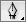

Ctrl+Z
撤销
Shift+Ctrl+Z
重做
Ctrl+X
重玩
Shift
吸附角度
Alt / Option
解锁控制柄
还剩
0
个端点
重播教程
你通关了贝塞尔游戏
还剩
0
个端点
推文晒分
再玩一次
你用了
0
端点
（
0
端点可用 ）
下一关
理想方案用了
0
个端点。你能做得更好吗？
再试一次
跳过教程
联系原作者
hello@method.ac
TCJY汉化
原版
这个游戏必须要用
键盘
和
鼠标
你似乎在用触控设备，但是我不太确定，请确认：
我在用键盘鼠标（触摸板）
继续贝塞尔游戏
我在用触摸屏
进入任何设备都能用的布尔游戏
贝塞尔游戏
让你成为钢笔  大佬